공인중개사-2차 (2017-10-28 기출문제)
1과목: 임의구분
1. 공인중개사법령상 용어와 관련된 설명으로 옳은 것은? (다툼이 있으면 판례에 따름)
- “공인중개사”에는 외국법에 따라 공인중개사 자격을 취득한 자도 포함된다.
- “중개업”은 다른 사람의 의뢰에 의하여 보수의 유무와 관계없이 중개를 업으로 행하는 것을 말한다.
- 개업공인중개사인 법인의 사원으로서 중개업무를 수행하는 공인중개사는 “소속공인중개사”가 아니다.
- “중개보조원”은 개업공인중개사에 소속된 공인중개사로서 개업공인중개사의 중개업무를 보조하는 자를 말한다.
- 개업공인중개사의 행위가 손해배상책임을 발생시킬 수 있는 “중개행위”에 해당하는지는 객관적으로 보아 사회통념상 거래의 알선·중개를 위한 행위라고 인정되는지에 따라 판단해야 한다.
(정답률: 54%)

2. 공인중개사법 제7조에서 규정하고 있는 ‘자격증 대여등의 금지’행위에 해당하는 것을 모두 고른 것은?
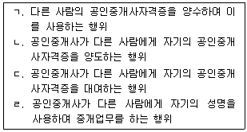
- ㄱ, ㄹ
- ㄴ, ㄷ
- ㄱ, ㄴ, ㄷ
- ㄴ, ㄷ, ㄹ
- ㄱ, ㄴ, ㄷ, ㄹ
(정답률: 52%)
3. 공인중개사법령상 분사무소 설치신고서의 기재사항이 아닌 것은?
- 본사 명칭
- 본사 소재지
- 본사 등록번호
- 분사무소 설치사유
- 분사무소 책임자의 공인중개사 자격증 발급 시·도
(정답률: 48%)
4. 공인중개사법령상 법인이 중개사무소를 등록·설치 하려는 경우, 그 기준으로 틀린 것은? (다른 법률의 규정은 고려하지 않음)
- 분사무소 설치 시 분사무소의 책임자가 분사무소 설치 신고일 전 2년 이내에 직무교육을 받았을 것
- 「상법」 상 회사는 자본금이 5천만원 이상일 것
- 대표자를 제외한 임원 또는 사원(합명회사 또는 합자회사의 무한책임사원)의 3분의 1 이상이 공인중개사일 것
- 법인이 중개업 및 겸업제한에 위배되지 않는 업무만을 영위할 목적으로 설립되었을 것
- 대표자는 공인중개사일 것
(정답률: 53%)
5. 공인중개사법령상 중개사무소의 개설등록 및 등록증 교부에 관한 설명으로 옳은 것은?
- 소속공인중개사는 중개사무소의 개설등록을 신청할 수 있다.
- 등록관청은 중개사무소등록증을 교부하기 전에 개설등록을 한 자가 손해배상책임을 보장하기 위한 조치(보증)를 하였는지 여부를 확인해야 한다.
- 국토교통부장관은 중개사무소의 개설등록을 한 자에 대하여 국토교통부령이 정하는 바에 따라 중개사무소등록증을 교부해야 한다.
- 중개사무소의 개설등록신청서에는 신청인의 여권용 사진을 첨부하지 않아도 된다.
- 중개사무소의 개설등록을 한 개업공인중개사가 종별을 달리하여 업무를 하고 등록신청서를 다시 제출하는 경우, 종전의 등록증은 반납하지 않아도 된다.
(정답률: 52%)
6. 甲과 乙은 2017. 1. 25. 서울특별시 소재 甲소유 X상가건물에 대하여 보증금 5억원, 월차임 500만원으로 하는 임대차계약을 체결한 후, 乙은 X건물을 인도받고 사업자등록을 신청하였다. 이 사안에서 개업공인중개사가 「상가건물 임대차보호법」 의 적용과 관련하여 설명한 내용으로 틀린 것을 모두 고른 것은? (일시사용을 위한 임대차계약은 고려하지 않음)(오류 신고가 접수된 문제입니다. 반드시 정답과 해설을 확인하시기 바랍니다.)
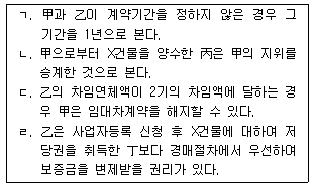
- ㄷ
- ㄱ, ㄹ
- ㄴ, ㄷ
- ㄱ, ㄷ, ㄹ
- ㄴ, ㄷ, ㄹ
(정답률: 24%)
7. 공인중개사법령상 중개대상물에 포함되지 않는 것을 모두 고른 것은? (다툼이 있으면 판례에 따름)
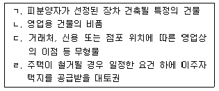
- ㄱ
- ㄱ, ㄴ
- ㄴ, ㄷ
- ㄱ, ㄴ ㄹ
- ㄴ, ㄷ, ㄹ
(정답률: 48%)
8. 공인중개사법령상 甲이 중개사무소의 개설등록을 할 수 있는 경우에 해당하는 것은?
- 甲이 부정한 방법으로 공인중개사의 자격을 취득하여 그 자격이 취소된 후 2년이 경과되지 않은 경우
- 甲이 「도로교통법」을 위반하여 금고 이상의 실형을 선고받고 그 집행이 종료된 날부터 3년이 경과되지 않은 경우
- 甲이 등록하지 않은 인장을 사용하여 공인중개사의 자격이 정지되고 그 자격정지기간 중에 있는 경우
- 甲이 대표자로 있는 개업공인중개사인 법인이 해산하여 그 등록이 취소된 후 3년이 경과되지 않은 경우
- 甲이 중개대상물 확인·설명서를 교부하지 않아 업무정지처분을 받고 폐업신고를 한 후 그 업무정지기간이 경과되지 않은 경우
(정답률: 45%)
9. 甲과 친구 乙은 乙을 명의수탁자로 하는 계약명의신탁약정을 하였고, 이에 따라 乙은 2017. 10. 17. 丙소유 X토지를 매수하여 乙명의로 등기하였다. 이 사안에서 개업공인중개사가 「부동산 실권리자명의 등기에 관한 법률」 의 적용과 관련하여 설명한 내용으로 옳은 것을 모두 고른 것은? (다툼이 있으면 판례에 따름)
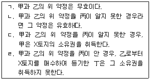
- ㄱ
- ㄹ
- ㄱ, ㄴ
- ㄴ, ㄷ
- ㄴ, ㄷ, ㄹ
(정답률: 36%)
10. 甲은 2017. 1. 28. 자기소유의 X주택을 2년간 乙에게 임대하는 계약을 체결하였다. 개업공인중개사가 이 계약을 중개하면서 「주택임대차보호법」과 관련하여 설명한 내용으로 옳은 것은?
- 乙은 「공증인법」 에 따른 공증인으로부터 확정일자를 받을 수 없다.
- 乙이 X주택의 일부를 주거 외 목적으로 사용하면 「주택임대차보호법」 이 적용되지 않는다.
- 임대차계약이 묵시적으로 갱신된 경우, 甲은 언제든지 乙에게 개약해지를 통지할 수 있다.
- 임대차 기간에 관한 분쟁이 발생한 경우, 甲은 주택임대차분쟁조정위원회에 조정을 신청할 수 없다.
- 경제사정의 변동으로 약정한 차임이 과도하게 되어 적절하지 않은 경우, 임대차 기간 중 乙은 그 차임의 20분의 2의 금액을 초과하여 감액을 청구할 수 있다.
(정답률: 34%)
11. 공인중개사법령상 개업공인중개사의 고용인의 신고에 관한 설명으로 옳은 것은?
- 소속공인중개사에 대한 고용 신고는 전자문서에 의하여도 할 수 있다.
- 중개보조원에 대한 고용 신고를 받은 등록관청은 시·도지사에게 그의 공인중개사 자격 확인을 요청해야 한다.
- 중개보조원은 고용 신고일 전 1년 이내에 실무교육을 받아야 한다.
- 개업공인중개사는 소속공인중개사와의 고용관계가 종료된 때에는 고용관계가 종료된 날부터 30일 이내에 등록관청에 신고해야 한다.
- 외국인을 소속공인중개사로 고용 신고하는 경우에는 그의 공인중개사 자격을 증명하는 서류를 첨부해야 한다.
(정답률: 46%)
12. 공인중개사법령상 법인인 개업공인중개사가 중개업과 겸업할 수 있는 업무가 아닌 것은? (다른 법률에 규정된 경우를 제외함)
- 주택의 임대관리
- 부동산의 개발에 관한 상담
- 토지에 대한 분양대행
- 개업공인중개사를 대상으로 한 중개업의 경영기법 제공
- 중개의뢰인의 의뢰에 따른 주거이전에 부수되는 용역의 알선
(정답률: 50%)
13. 공인중개사법령상 인장의 등록에 관한 설명으로 옳은 것은?
- 소속공인중개사는 중개업무를 수행하더라도 인장등록을 하지 않아도 된다.
- 개업공인중개사가 등록한 인장을 변경한 경우, 변경일부터 7일 이내에 그 변경된 인장을 등록관청에 등록하지 않으면 이는 업무정지사유에 해당한다.
- 법인인 개업공인중개사의 주된 사무소에서 사용할 인장은 「상업등기규칙」 에 따라 법인의 대표자가 보증하는 인장이어야 한다.
- 법인인 개업공인중개사의 인장등록은 「상업등기규칙」 에 따른 인감증명서의 제출로 갈음할 수 없다.
- 개업공인중개사의 인장등록은 중개사무소 개설등록신청과 같이 할 수 없다.
(정답률: 44%)
14. 공인중개사법령에 관한 설명으로 틀린 것은?
- 소속공인중개사를 고용한 경우, 그의 공인중개사자격증 원본도 당해 중개사무소 안의 보기 쉬운 곳에 게시해야 한다.
- 법인인 개업공인중개사의 분사무소의 경우, 분사무소설치신고필증 원본을 당해 분사무소 안의 보기 쉬운 곳에 게시해야 한다.
- 개업공인중개사가 아닌 자는 중개대상물에 대한 표시·광고를 해서는 안된다.
- 중개사무소의 명칭을 명시하지 아니하고 중개대상물의 표시·광고를 한 자를 신고한 자는 포상금 지급 대상에 해당된다.
- 개업공인중개사는 이중으로 중개사무소의 개설등록을 하여 중개업을 할 수 없다.
(정답률: 44%)
15. 공인중개사법령상 중개사무소의 이전신고에 관한 설명으로 틀린 것은?
- 중개사무소를 이전한 때에는 이전할 날부터 10일 이내에 이전신고를 해야 한다.
- 분사무소를 이전한 때에는 주된 사무소의 소재지를 관할하는 등록관청에 이전신고를 해야 한다.
- 분사무소의 이전신고를 하려는 법인인 개업공인중개사는 중개사무소등록증을 첨부해야 한다.
- 분사무소의 이전신고를 받은 등록관청은 지체없이 이를 이전 전 및 이전 후의 소재지를 관할하는 시장·군수 또는 구청장에게 통보해야 한다.
- 중개사무소를 등록관청의 관할지역 외에 지역으로 이전한 경우, 그 이전신고 전에 발생한 사유로 인한 개업공인중개사에 대한 행정처분은 이전 후 등록관청이 행한다.
(정답률: 38%)
16. 공인중개사법령상 일반중개계약에 관한 설명으로 옳은 것은?
- 일반중개계약서는 국토교통부장관이 정한 표준이 되는 서식을 사용해야 한다.
- 중개의뢰인은 동일한 내용의 일반중개계약을 다수의 개업공인중개사와 체결할 수 있다.
- 일반증개계약의 체결은 서면으로 해야 한다.
- 중개의뢰인은 일반중개계약서에 개업공인중개사가 준소해야 할 사항의 기재를 요청할 수 없다.
- 개업공인중개사가 일반중개계약을 체결한 때에는 부동산 거래정보망에 중개대상물에 관한 정보를 공개해야 한다.
(정답률: 45%)
17. 공인중개사법령상 개업공인중개사가 등록관청에 미리 신고해야 하는 사유를 모두 고른 것은?
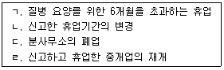
- ㄱ
- ㄴ , ㄷ
- ㄱ, ㄴ, ㄷ
- ㄴ, ㄷ, ㄹ
- ㄱ, ㄴ, ㄷ, ㄹ
(정답률: 47%)
18. 공인중개사법령상 중개사무소의 명칭에 관한 설명으로 옳은 것은?
- 개업공인중개사가 아닌 자로서 “부동산중개”라는 명칭을 사용한 자는 1년 이하의 징역 또는 1천만원 이하의 벌금에 처한다.
- 개업공인중개사가 아닌 자가 “공인중개사사무소”라는 명칭을 사용한 간판을 설치한 경우, 등록관청은 그 철거를 명할 수 없다.
- 법인 분사무소의 옥외광고물을 설치하는 경우 법인 대표자의 성명을 표기해야 한다.
- 개업공인중개사는 옥외광고물을 설치해야 할 의무가 있다.
- 개업공인중개사가 사무소의 명칭에 “공인중개사사무소” 또는 “부동산중개”라는 문자를 사용하지 않은 경우, 이는 개설등록의 취소사유에 해당한다.
(정답률: 45%)
19. 甲소유 X부동산을 매도하기 위한 甲과 개업공인중개사 乙의 전속중개계약에 관한 설명으로 틀린 것은?
- 甲과 乙의 전속중개계약은 국토교통부령이 정하는 계약서에 의해야 한다.
- 甲과 乙의 전속중개계약의 유효기간을 약정하지 않은 경우 유효기간은 3개월로 한다.
- 乙이 甲과의 전속중개계약 체결 뒤 6개월만에 그 계약서를 폐기한 경우 이는 업무정지사유에 해당한다.
- 甲이 비공개를 요청하지 않은 경우, 乙은 전속중개계약체결 후 2주 내에 X부동산에 관한 정보를 부동산 거래정보망 또는 일간신문에 공개해야 한다.
- 전속중개계약 체결 후 乙이 공개해야 할 X부동산에 관한 정보에는 도로 및 대중교통수단과의 연계성이 포함된다.
(정답률: 39%)
20. 개업공인중개사가 중개의뢰인이게 「민사집행법」 에 따른 부동산 경매에 관하여 설명한 내용으로 틀린 것은?
- 부동산의 매각은 호가경매(呼價競賣), 기일입찰 또는 기간입찰의 세 가지 방법 중 집행법원이 정한 방법에 따른다.
- 강제경매신청을 기각하거나 각하하는 재판에 대하여는 즉시항고를 할 수 있다.
- 경매개시결정을 한 부동산에 대하여 다른 강제경매의 신청이 있는 때에는 법원은 뒤의 경매신청을 각하해야 한다.
- 경매신청이 취하되면 압류의 효력은 소멸된다.
- 매각허가결정에 대하여 항고를 하고자 하는 사람은 보증으로 매각대금의 10분의 1에 해당하는 금전 또는 법원이 인정한 유가증권을 공탁해야 한다.
(정답률: 24%)
21. 공인중개사법령상 개업공인중개사에게 금지되어 있는 행위를 모두 고른 것은?
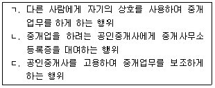
- ㄴ
- ㄷ
- ㄱ , ㄴ
- ㄱ , ㄷ
- ㄱ, ㄴ, ㄷ
(정답률: 47%)
22. 甲은 매수신청대리인으로 등록한 개업공인중개사 乙에게 「민사집행법」 에 의한 경매대상 부동산에 대한 매수신청대리의 위임을 하였다. 이에 관한 설명으로 틀린 것은?
- 보수의 지급시기에 관하여 甲과 乙의 약정이 없을 때에는 매각대금의 지급기한일로 한다.
- 乙은 「민사집행법」 에 따른 차순위매수신고를 할 수 있다.
- 乙은 매수신청대리인 등록증을 자신의 중개사무소 안의 보기 쉬운 곳에 게시해야 한다.
- 乙이 중개업을 휴업한 경우 관할 지방법원장은 乙의 매수신청대리인 등록을 취소해야 한다.
- 乙은 매수신청대리 사건카드에 중개행위에 사용하기 위해 등록한 인장을 사용하여 서명날인해야 한다.
(정답률: 39%)
23. 공인중개사법령상 공인중개사 정책심의위원회의 소관사항이 아닌 것은?
- 중개보수 변경에 관한 사항의 심의
- 공인중개사협회의 설립인가에 관한 의결
- 심의위원에 대한 기피신청을 받아들일 것인지 여부에 관한 의결
- 국토교통부장관이 직접 공인중개사자격시험 문제를 출제할 것인지 여부에 관한 의결
- 부득이한 사정으로 당해 연도의 공인중개사자격시험을 시행하지 않을 것인지 여부에 관한 의결
(정답률: 43%)
24. 공인중개사법령상 과태료 부과대상자가 아닌 것은?
- 연수교육을 정당한 사유 없이 받지 아니한 소속공인중개사
- 신고한 휴업기간을 변경하고 변경신고를 하지 아니한 개업공인중개사
- 중개사무소의 개설등록 취소에 따른 중개사무소 등록증 반납의무를 위반한 자
- 중개사무소의 이전신고 의무를 위반한 개업공인중개사
- 개업공인중개사가 아닌 자로서 중개업을 하기 위하여 중개대상물에 대한 표시·광고를 한 자
(정답률: 42%)
25. 공인중개사법령상 소속공인중개사의 자격정지사유에 해당하는 것을 모두 고른 것은?
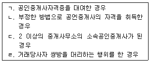
- ㄱ, ㄴ
- ㄱ, ㄷ
- ㄷ, ㄹ
- ㄱ, ㄴ, ㄹ
- ㄴ, ㄷ, ㄹ
(정답률: 33%)
26. 공인중개사법령상 법정형이 1년 이하의 징역 또는 1천만원 이하의 벌금에 해당하는 자를 모두 고른 것은?
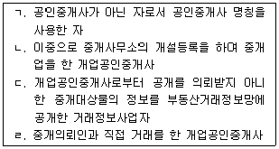
- ㄱ, ㄹ
- ㄴ, ㄷ
- ㄱ, ㄴ, ㄷ
- ㄴ, ㄷ, ㄹ
- ㄱ, ㄴ, ㄷ, ㄹ
(정답률: 42%)
27. 부동산 거래신고 등에 관한 법령상 토지거래허가구역 등에 관한 설명으로 옳은 것을 모두 고른 것은?
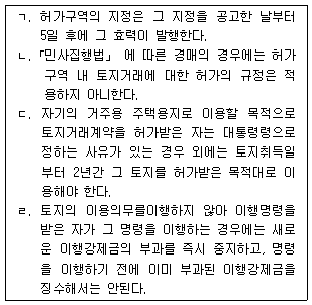
- ㄱ, ㄴ
- ㄴ, ㄷ
- ㄱ, ㄴ, ㄷ
- ㄱ, ㄷ, ㄹ
- ㄱ, ㄴ, ㄷ, ㄹ
(정답률: 38%)
28. 공인중개사법령상 지도·감독에 관한 설명으로 옳은 것은?
- 공인중개사자격증을 교부한 시·도지사와 공인중개사 사무소의 소재지를 관할하는 시·도지사가 서로 다른 경우 , 국토교통부장관이 공인중개사의 자격취소처분을 행한다.
- 개업공인중개사가 등록하지 아니한 인장을 사용한 경우, 등록관청이 명할 수 있는 업무정지기간의 기준은 3개월이다.
- 시·도지사가 가중하여 자격정지처분을 하는 경우, 그 자격정지가간은 6개월을 초과할 수 있다.
- 등록관청은 개업공인중개사가 이동이 용이한 임시중개시설물을 설치한 경우에는 중개사무소의 개설등록을 취소해야 한다.
- 업무정지처분은 그 사유가 발생한 날부터 2년이 경과한 때에는 이를 할 수 없다.
(정답률: 33%)
29. 개업공인중개사가 외국인에게 부동산 거래신고 등에 관한 법령의 내용을 설명한 것으로 틀린 것은?
- 외국인이 부동산 거래신고의 대상인 계약을 체결하여 부동산 거래신고를 한 때에도 부동산 취득신고를 해야 한다.
- 외국인이 경매로 대한민국 안의 부동산을 취득한 때에는 취득한 날부터 6개월 이내에 신고관청에 신고해야 한다.
- 외국인이 취득하려는 토지가 「자연환경보전법」 에 따른 생태·경관보전지역에 있으면, 「부동산 거래신고 등에 관한 법률」 에 따라 토지거래계약에 관한 허가를 받은 경우를 제외하고는 토지취득계약을 체결하기 전에 신고관청으로부터 토지취득의 허가를 받아야 한다.
- 대한민국 안의 부동산을 가지고 있는 대한민국 국민이 외국인으로 변경되었음에도 해당 부동산을 계속 보유하려는 경우, 외국인으로 변경된 날부터 6개월 이내에 신고관청에 계속보유에 관한 신고를 해야 한다.
- 외국의 법령에 따라 설립된 법인이 자본금의 2분의 1이상을 가지고 있는 법인은 “외국인등”에 해당한다.
(정답률: 31%)
30. 공인중개사법령상 개업공인중개사의 손해배상책임의 보장에 관한 설명으로 틀린 것은?
- 개업공인중개사는 자기의 중개사무소를 다른 사람의 중개행위의 장소로 제공함으로써 거래당사자에게 재산상의 손해를 발생하게 한 때에는 그 손해를 배상할 책임이 있다.
- 개업공인중개사는 보증보험금·공제금 또는 공탁금으로 손해배상을 한 때에는 30일 이내에 보증보험 또는 공제에 다시 가입하거나 공탁금 중 부족하게 된 금액을 보전해야 한다.
- 개업공인중개사는 중개가 완성된 때에는 거래당사자에게 손해배상책임의 보장에 관한 사항을 설명하고 관계증서의 사본을 교부하거나 관계 증서에 관한 전자문서를 제공해야 한다.
- 보증보험의 보증기간이 만료되어 다시 보증을 설정하려는 개업공인중개사는 그 보증기간 만료일까지 다시 보증을 설정해야 한다.
- 개업공인중개사는 업무를 개시하기 전에 손해배상책임을 보장하기 위하여 대통령령이 정하는 바에 따라 보증보험 또는 공제에 가입하거나 공탁을 해야 한다.
(정답률: 43%)
31. 개업공인중개사 甲이 공인중개사법령에 따라 거래계약서를 작성하고자 한다. 이에 관한 설명으로 틀린 것은? (다툼이 있으면 판례에 따름)
- 甲은 중개대상물에 대하여 중개가 완성된 때에만 거래계약서를 작성·교부해야 한다.
- 甲이 작성하여 거래당사자에게 교부한 거래계약서의 사본을 보존해야 할 기간은 5년이다.
- 공동중개의 경우, 甲과 참여한 개업공인중개사 모두 거래계약서에 서명 또는 날인해야 한다.
- 계약의 조건이 있는 경우, 그 조건은 거래계약서에 기재해야 할 사항이다.
- 국토교통부장관은 개업공인중개사가 작성하는 거래계약서의 표준이 되는 서식을 정하여 그 사용을 권장할 수 있다.
(정답률: 38%)
32. 공인중개사법령상 공인중개사인 개업공인중개사등의 중개대상물 확인·설명에 관한 내용으로 옳은 것을 모두 고른 것은?
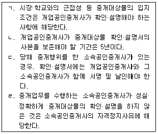
- ㄱ, ㄴ
- ㄱ, ㄹ
- ㄴ, ㄷ
- ㄱ, ㄷ, ㄹ
- ㄴ, ㄷ, ㄹ
(정답률: 43%)
33. 공인중개사법령상 개업공인중개사등의 교육에 관한 설명으로 틀린 것은?
- 실무교육은 그에 관한 업무의 위탁이 없는 경우 시·도지사가 실시한다.
- 연수교육을 실시하려는 경우 그 교육의 일시·장소를 관보에 공고한 후 대상자에게 통지해야 한다.
- 실무교육을 받은 개업공인중개사 및 소속공인중개사는 그 실무교육을 받은 후 2년마다 연수교육을 받아야 한다.
- 직무교육의 교육시간은 3시간 이상 4시간 이하로 한다.
- 국토교통부장관, 시·도지사 및 등록관청은 필요하다고 인정하면 개업공인중개사등의 부동산거래사고 예방을 위한 교육을 실시할 수 있다.
(정답률: 35%)
34. 공인중개사법령상 개업공인중개사가 주거용 건축물의 중개대상물 확인·설명서[ I ]를 작성하는 방법에 관한 설명으로 틀린 것은?
- 개업공인중개사 기본 확인사항은 개업공인중개사가 확인한 사항을 적어야 한다.
- 건축물의 내진설계 적용여부와 내진능력은 개업공인중개사 기본 확인사항이다.
- 거래예정금액은 중개가 완성되기 전 거래예정금액을 적는다.
- 벽면 및 도배상태는 매도(임대)의뢰인에게 자료를 요구하여 확인한 사항을 적는다.
- 아파트를 제외한 주택의 경우, 단독경보형감지기 설치여부는 개업공인중개사 세부 확인사항이 아니다.
(정답률: 41%)
35. 공인중개사법령상 중개보수 등에 관한 설명으로 옳은 것은? (다툼이 있으면 판례에 따름)
- 개업공인중개사와 중개의뢰인간의 약정이 없는 경우, 중개보수의 지급시기는 거래계약이 체결된 날로 한다.
- 공인중개사법령에서 정한 한도를 초과하는 중개보수약정은 그 한도를 초과하는 범위 내에서 무효이다.
- 주택 외의 중개대상물의 중개보수의 한도는 시·도의 조례로 정한다.
- 개업공인중개사는 계약금 등의 반환채무이행 보장을 위해 실비가 소요되더라도 보수 이외에 실비를 받을 수 없다.
- 주택인 중개대상물 소재지와 중개사무소 소재지가 다른 경우, 개업공인중개사는 중개대상물 소재지를 관할하는 시·도의 조례에서 정한 기준에 따라 중개보수를 받아야 한다.
(정답률: 42%)
36. 공인중개사법령상 중개보수의 한도와 계산 등에 관한 설명으로 틀린 것은? (다툼이 있으면 판례에 따름)
- 중도금의 일부만 납부된 아파트 분양권의 매매를 중개하는 경우, 중개보수는 총 분양대금과 프리미엄을 합산한 금액을 거래금액으로 하여 계산한다.
- 교환계약의 경우, 중개보수는 교환대상 중개대상물 증거금액이 큰 중개대상물의 가액을 거래금액으로 하여 계산한다.
- 동일한 중개대상물에 대하여 동일 당사자간에 매매를 포함한 둘 이상의 거래가 동일 기회에 이루어지는 경우, 중개보수는 매매계약에 관한 거래금액만을 적용하여 계산한다.
- 주택의 임대차를 중개하는 경우, 의뢰인 일방으로부터 받을 수 있는 중개보수의 한도는 거래금액의 1천분의 8 이내로 한다.
- 중개대상물인 건축물 중 주택의 면적이 2분의 1미만인 경우, 주택 외의 중개대상물에 대한 중개보수 규정을 적용한다.
(정답률: 40%)
37. 공인중개사법령상 개업공인중개사의 금지행위에 해당하지 않는 것은? (다툼이 있으면 판례에 따름)
- 중개사무소 개설등록을 하지 않고 중개업을 영위하는 자인 사실을 알면서 그를 통하여 중개를 의뢰받는 행위
- 사례금 명목으로 법령이 정한 한도를 초과하여 중개보수를 받는 행위
- 관계 법령에서 양도·알선 등이 금지된 부동산의 분양과 관련 있는 증서의 매매를 중개하는 행위
- 법인 아닌 개업공인중개사가 중개대상물 외 건축자재의 매매를 업으로 하는 행위
- 중개의뢰인이 중간생략등기의 방법으로 전매하여 세금을 포탈하려는 것을 개업공인중개사가 알고도 투기목적의 전매를 중개하였으나, 전매차익이 발생하지 않는 경우 그 중개행위
(정답률: 43%)
38. 부동산 거래신고 등에 관한 법령상 부동산 거래신고의 대상이 되는 계약을 모두 고른 것은?
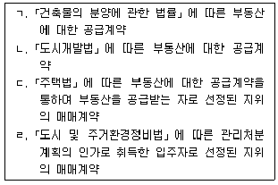
- ㄱ, ㄴ
- ㄷ, ㄹ
- ㄱ, ㄴ, ㄷ
- ㄴ, ㄷ, ㄹ
- ㄱ, ㄴ, ㄷ, ㄹ
(정답률: 41%)
39. 부동산 거래신고 등에 관한 법령상 부동산 거래계약신고서 작성에 관한 설명으로 틀린 것은?
- 거래대상 부동산의 공법상 거래규제 및 이용제한에 관한 사항은 신고서 기재사항이다.
- 부동산거래계약 신고서를 제출한 후 해당 부동산 거래계약이 해제된 경우, 거래당사자 또는 개업공인중개사는 부동산거래계약 해제등 신고서에 서명 또는 날인하여 신고관청에 제출할 수 있다.
- 개업공인중개사가 거래계약서를 작성·교부한 경우, 개업공인중개사의 인적사항과 개설등록한 중개사무소의 상호·전화번호 및 소재지도 신고사항에 포함된다.
- 거래대상의 종류가 공급계약(분양)인 경우, 물건별 거래가격 및 총 실제거래가격에 부가가치세를 포함한 금액을 적는다.
- 계약대상 면적에는 실제 거래면적을 계산하여 적되, 건축물 면적은 집합건축물의 경우 전용면적을 적고, 그 밖의 건축물의 경우 연면적을 적는다.
(정답률: 30%)
40. 부동산 거래신고 등에 관한 법령상 신고대상인 부동산 거래계약의 신고에 관한 설명으로 틀린 것은?
- 사인간의 거래를 중개한 개업공인중개사가 거래계약서를 작성·교부한 경우, 해당 개업공인중개사가 거래신고를 해야 한다.
- 부동산의 매수인은 신고인이 부동산거래계약 신고필증을 발급받은 때에 「부동산등기 특별조치법」 에 따른 검인을 받은 것으로 본다.
- 개업공인중개사의 위임을 받은 소속공인중개사가 부동산거래계약 신고서의 제출을 대행하는 경우, 소속공인중개사는 신분증명서를 신고관청에 보여주어야 한다.
- 거래당사자 중 일방이 국가인 경우, 국가가 부동산 거래계약의 신고를 해야 한다.
- 신고관청은 거래대금 지급을 증명할 수 있는 자료를 제출하지 아니한 사실을 자진 신고한 자에 대하여 과태료를 감경 또는 면제할 수 있다.
(정답률: 33%)
2과목: 임의구분
41. 국토의 계획 및 이용에 관한 법령상 광역도시계획 등에 관한 설명으로 틀린 것은? (단, 조례는 고려하지 않음)
- 국토교통부장관은 광역계획권을 지정하려면 관계 시·도지사, 시장 또는 군수의 의견을 들은 후 중앙도시계획위원회의 심의를 거쳐야 한다.
- 시·도지사, 시장 또는 군수는 광역도시계획을 변경하려면 미리 관계 시·도, 시 또는 군의 의회와 관계 시장 또는 군수의 의견을 들어야 한다.
- 국토교통부장관은 시·도지사가 요청하는 경우에도 시·도지사와 공동으로 광역도시계획을 수립할 수 없다.
- 시장 또는 군수는 광역도시계획을 수립하려면 도지사의 승인을 받아야 한다.
- 시장 또는 군수는 광역도시계획을 변경하려면 미리 공청회를 열어야 한다.
(정답률: 39%)
42. 국토의 계획 및 이용에 관한 법령상 도시·군관리계획 등에 관한 설명으로 옳은 것은?
- 시가화조정구역의 지정에 관한 도시·군관리계획 결정 당시 승인받은 사업이나 공사에 이미 착수한 자는 신고없이 그 사업이나 공사를 계속할 수 있다.
- 국가계획과 연계하여 시가화조정구역의 지정이 필요한 경우 국토교통부장관이 직접 그 지정을 도시·군관리계획으로 결정할 수 있다.
- 도시·군과리계획의 입안을 제안받은 자는 도시·군관리계획의 입안 및 결정에 필요한 비용을 제안자에게 부담시킬 수 없다.
- 수산자원보호구역의 지정에 관한 도시·군관리계획은 국토교통부장관이 결정한다.
- 도시·군관리계획 결정은 지형도면을 고시한 날의 다음날부터 효력이 발생한다.
(정답률: 38%)
43. 국토의 계획 및 이용에 관한 법령상 용도지역 중 도시지역에 해당하지 않는 것은?
- 계획관리지역
- 자연녹지지역
- 근린상업지역
- 전용공업지역
- 생산녹지지역
(정답률: 36%)
44. 국토의 계획 및 이용에 관한 법령상 용도지역·용도지구·용도구역에 관한 설명으로 틀린 것은?
- 국토교통부장관이 용도지역을 지정하는 경우에는 도시·군관리계획으로 결정한다.
- 시·도지사는 도시자연공원구역의 변경을 도시·군관리계획으로 결정할 수 있다.
- 시·도지사는 법률에서 정하고 있는 용도지구 외에 새로운 용도지구를 신설할 수 없다.
- 집단취락지구란 개발제한구역안의 취락을 정비하기 위하여 필요한 지구를 말한다.
- 방재지구의 지정을 도시·군관리계획으로 결정하는 경우 도시·군관리계획의 내용에는 해당 방재지구의 재해저감 대책을 포함하여야 한다.
(정답률: 37%)
45. 국토의 계획 및 이용에 관한 법령상 지구단위계획 등에 관한 설명으로 틀린 것은?
- 「관광진흥법」 에 따라 지정된 관광특구에 대하여 지구단위계획구역을 지정할 수 있다.
- 도시지역 외의 지역도 지구단위계획구역으로 지정될 수 있다.
- 건축물의 형태·색채에 관한 계획도 지구단위계획의 내용으로 포함될 수 있다.
- 지구단위계획으로 차량진입금지구간을 지정한 경우 「주차장법」 에 따른 주차장 설치기준을 최대 80%까지 완화하여 적용할 수 있다.
- 주민은 시장 또는 군수에게 지구단위계획구역의 지정에 관한 사항에 대하여 도시·군관리계획의 입안을 제안할 수 있다.
(정답률: 39%)
46. 국토의 계획 및 이용에 관한 법령의 규정 내용으로 틀린 것은?
- 관계 중앙행정기관의 장은 국토교통부장관에게 시범도시의 지정을 요청하고자 하는 때에는 주민의 의견을 들은 후 관계 지방자치단체의 장의 의견을 들어야 한다.
- 국토교통부장관이 직접 시범도시를 지정함에 있어서 그 대상이 되는 도시를 공모할 경우, 시장 또는 군수는 공모에 응모할 수 있다.
- 행정청인 도시·군계획시설사업 시행자의 처분에 대하여는 「행정심판법」 에 따라 행정심판을 제기할 수 있다.
- 국토교통부장관이 이 법률의 위반자에 대한 처분으로서 실시계획인가를 취소하려면 청문을 실시하여야 한다.
- 도지사는 도시·군기본계획과 도시·군관리계획이 국가계획의 취지에 부합하지 아니하다고 판단하는 경우, 국토교통부장관에게 변경을 요구할 수 있다.
(정답률: 29%)
47. 국토의 계획 및 이용에 관한 법령상 기반시설부담구역에서의 기반시설설치비용에 관한 설명으로 틀린 것은?
- 기반시설설치비용 산정시 기반시설을 설치하는 데 필요한 용지비용도 산입된다.
- 기반시설설치비용 납부시 물납이 인정될 수 있다.
- 기반시설설치비용의 관리 및 운용을 위하여 기반시설부담구역별로 특별회계가 설치되어야 한다.
- 의료시설과 교육연구시설의 기반시설유발계수는 같다.
- 기반시설설치비용을 부과받은 납부의무자는 납부기일의 연기 또는 분할납부가 인정되지 않는 한 사용승인(준공검사 등 사용승인이 의제되는 경우에는 그 준공검사)신청 시까지 기반시설성치비용을 내야 한다.
(정답률: 34%)
48. 국토의 계획 및 이용에 관한 법령상 도시·군계획시설에 관한 설명으로 옳은 것은?
- 도시·군계획시설결정의 고시일부터 5년 이내에 도시·군계획시설사업이 시행되지 아니하는 경우 그 도시·군계획시설의 부지 중 지목이 대(垈)인 토지의 소유자는 그 토지의 매수를 청구할 수 있다.
- 도시개발구역의 규모가 150만 m2인 경우 해당 구역의 개발사업 시행자는 공동구를 설치하여야 한다.
- 공동구가 설치된 경우 하수도관은 공동구협의회의 심의를 거쳐 공동구에 수용할 수 있다.
- 공동구관리자는 매년 해당 공동구의 안전 및 유지관리계획을 수립·시행하여야 한다.
- 도시·군계획시설결정은 고시일부터 10년 이내에 도시·군계획시설사업이 시행되지 아니하는 경우 그 고시일부터 10년이 되는 날의 다음날에 그 효력을 잃는다.
(정답률: 31%)
49. 국토의 계획 및 이용에 관한 법률상 기반시설의 종류와 그 해당 시설의 연결로 틀린 것은?
- 교통시설 - 건설기계운전학원
- 유통·공급시설 - 방송·통신시설
- 방재시설 - 하천
- 공간시설 – 자연장치
- 환경기초시설 – 폐차장
(정답률: 30%)
50. 국토의 계획 및 이용에 관한 법령상 도시·군계획시설사업의 시행 등에 관한 설명으로 틀린 것은?
- 지방자치단체가 직접 시행하는 경우에는 이행보증금을 예치하여야 한다.
- 광역시장이 단계별집행계획을 수립하고자 하는 때에는 미리 관계 행정기관의 장과 합의하여야 하며, 해당 지방의회의 의견을 들어야 한다.
- 둘 이상의 시 또는 군의 관할 구역에 걸쳐 시행되는 도시·군계획시설사업이 광역도시계획과 관련된 경우, 도지사는 관계 시장 또는 군수의 의견을 들어 직접 시행할 수 있다.
- 시행자는 도시·군계획시설사업을 효율적으로 추진하기 위하여 필요하다고 인정되면 사업시행대상지역을 둘 이상으로 분할하여 시행할 수 있다.
- 행정청인 시행자는 이해관계인의 주소 또는 거소(居所)가 불분명하여 서류를 송달할 수 없는 경우 그 서류의 송달을 갈음하여 그 내용을 공시할 수 있다.
(정답률: 39%)
51. 국토의 계획 및 이용에 관한 법령상 광역계획권과 광역시설에 관한 설명으로 틀린 것은?
- 국토교통부장관은 인접한 둘 이상의 특별시·광역시·특별자치시의 관할 구역 전부 또는 일부를 광역계획권으로 지정할 수 있다.
- 광역시설의 설치 및 관리는 공동구의 설치에 관한 규정에 따른다.
- 봉안시설, 도축장은 광역시설이 될 수 있다.
- 관계 특별시장·광역시장·특별자치시장·특별자치도지사는 협약을 체결하거나 협의회 등을 구성하여 광역시설을 설치·관리할 수 있다.
- 국가계획으로 설치하는 광역시설은 그 광역시설의 설치·관리를 사업목적 또는 사업종목으로 하여 다른 법률에 따라 설립된 법인이 설치·관리할 수 있다.
(정답률: 32%)
52. 국토의 계획 및 이용에 관한 법령상 용적률의 최대한 도가 낮은 지역부터 높은 지역까지 순서대로 나열한 것은? (단, 조례 등 기타 강화·완화 조건은 고려하지 않음)
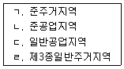
- ㄱ – ㄴ – ㄷ - ㄹ
- ㄱ – ㄹ – ㄷ - ㄴ
- ㄴ – ㄷ – ㄹ - ㄱ
- ㄷ – ㄹ – ㄱ – ㄴ
- ㄹ – ㄷ – ㄴ – ㄱ
(정답률: 36%)
53. 도시개발법령상 도시개발구역 지정권자가 시행자를 변경할 수 있는 경우가 아닌 것은?
- 도시개발사업에 관한 실시계획의 인가를 받은 후 2년 이내에 사업을 착수하지 아니하는 경우
- 행정처분으로 사업시행자의 지정이 취소된 경우
- 사업시행자가 도시개발구역 지정의 고시일부터 6개월 이내에 실시계획의 인가를 신청하지 아니하는 경우
- 사업시행자의 부도로 도시개발사업의 목적을 달성하기 어렵다고 인정되는 경우
- 행정처분으로 실시계획의 인가가 취소된 경우
(정답률: 31%)
54. 다음은 도시개발법령상 공동으로 도시개발사업을 시행하려는 자가 정하는 규약에 포함되어야 할 사항이다. 환지방식으로 시행하는 경우에만 포함되어야 할 사항이 아닌 것은?
- 청산
- 환지계획 및 환지예정지의 지정
- 보류지 및 체비지의 관리·처분
- 토지평가협의회의 구성 및 운영
- 주된 사무소의 소재지
(정답률: 31%)
55. 도시개발법령상 도시개발사업의 시행자 중 「주택법」 에 따른 주택건설사업자 등으로 하여금 도시개발사업의 일부를 대행하게 할 수 있는 자만을 모두 고른 것은?
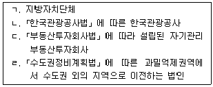
- ㄱ
- ㄱ, ㄴ
- ㄴ, ㄷ
- ㄷ, ㄹ
- ㄴ, ㄷ, ㄹ
(정답률: 29%)
56. 도시개발법령상 환지 방식으로 도시개발사업을 시행하는 경우, 환지처분에 관한 설명으로 틀린 것은?
- 시행자는 도시개발사업에 관한 공사를 끝낸 경우에는 지체 없이 관보 또는 공보에 이를 공고하여야 한다.
- 지정권자가 시행자인 경우 법 제51조에 따른 공사 완료 공고가 있는 때에는 60일 이내에 환지처분을 하여야 한다.
- 환지 계획에 따라 입체환지처분을 받은 자는 환지처분이 공고된 날의 다음날에 환지 계획으로 정하는 바에 따라 건축물의 일부와 해당 건축물이 있는 토지의 공유지분을 취득한다.
- 체비지로 정해지지 않은 보류지는 환지 계획에서 정한자가 환지처분이 공고된 날의 다음날에 해당 소유권을 취득한다.
- 도시개발사업의 시행으로 행사할 이익이 없어진 지역권은 환지처분이 공고된 날의 다음날이 끝나는 때에 소멸한다.
(정답률: 33%)
57. 도시개발법령상 도시개발채권에 관한 설명으로 틀린 것은?
- 도시개발채권의 상환은 2년부터 10년까지의 범위에서 지방자치단체의 조례로 정한다.
- 도시개발채권의 소멸시효는 상환일로부터 기산하여 원금은 5년, 이자는 2년으로 한다.
- 수용 또는 사용방식으로 시행하는 도시개발사업의 경우 한국토지주택공사와 공사도급계약을 체결하는 자는 도시개발채권을 매입하여야 한다.
- 도시개발채권은 무기명으로 발행할 수 있다.
- 도시개발채권의 매입의무자가 매입하여야 할 금액을 초과하여 도시개발채권을 매입한 경우 중도상환을 신청할 수 있다.
(정답률: 28%)
58. 도시개발법령상 도시개발사업의 일부를 환지방식으로 시행하기 위하여 개발계획을 변경할 때 토지소유자의 동의가 필요한 경우는? (단, 시행자는 한국토지주택공사이며, 다른 조건은 고려하지 않음)
- 너비가 10m인 도로를 폐지하는 경우
- 도로를 제외한 기반시설의 면적이 종전보다 100분의 4 증가하는 경우
- 기반시설을 제외한 도시개발구역의 용적률이 종전보다 100분의 4 증가하는 경우
- 사업시행지구를 분할하거나 분할된 사업시행지구를 통합하는 경우
- 수용예정인구가 종전보다 100분의 5 중가하여 2천6백명이 되는 경우
(정답률: 27%)
59. 도시 및 주거환경정비법령상 주택재건축사업의 안전진단에 관한 설명으로 틀린 것은?
- 시장·군수는 단계별 정비사업추진계획에 따른 주택재건축사업의 정비예정구역별 정비계획의 수립시기가 도래한 때에는 안전진단을 실시하여야 한다.
- 진입도로 등 기반시설 설치를 위하여 불가피하게 정비구역에 포함된 것으로 시장·군수가 인정하는 주택단지 내의 건축물은 안전진단 대상에서 제외할 수 있다.
- 시장·군수는 현지조사 등을 통하여 해당 건축물의 구조안전성, 건축마감, 설비노후도 및 주거환경 적합성 등을 심사하여 안전진단 실시여부를 결정하여야 한다.
- 시·도지사는 필요한 경우 한국시설안전공단에 안전진단결과의 적정성 여부에 대한 검토를 의뢰할 수 있다.
- 시장·군수는 주택재건축사업의 시행을 결정한 경우에는 지체 없이 국토교통부장관에게 안전진단결과보고서를 제출하여야 한다.
(정답률: 30%)
60. 도시 및 주거환경정비법령상 정비사업과 정비계획수립대상 지역의 연결로 틀린 것은? (단, 조례는 고려하지 않음)
- 주거환경개선사업 – 정비기간시설이 현저히 부족하여 재해발생시 피난 및 구조 활동이 곤란한 지역
- 주택재건축사업 – 철거민이 50세대 이상 규모로 정착한 지역
- 도시환경정비사업 – 인구·산업 등이 과도하게 집중되어 있어 도시기능의 회복을 위하여 토지의 합리적인 이용이 요청되는 지역
- 주거환경관리사업 – 단독주택 및 다세대주택 등이 밀집한 지역으로서 주거환경이 보전·정비·개량이 필요한 지역
- 주택재개발사업 – 노후·불량건축물의 수가 전체 건축물의 수의 3분의 2 이상인 지역으로서 정비기반시설의 정비에 따라 토지가 대지로서의 효용을 다할 수 없게 되거나 과소토지로 되어 도시의 환경이 현저히 불량하게 될 우려가 있는 지역
(정답률: 30%)
61. 도시 및 주거환경정비법령상 주택의 공급 등에 관한 설명으로 옳은 것은?
- 주거환경개선사업의 사업시행자는 정비사업의 시행으로 건설된 건축물을 인가된 사업시행계획에 따라 토지등소유자에게 공급하여야 한다.
- 국토교통부장관은 조합이 요청하는 경우 주택재건축사업의 시행으로 건설된 임대주택을 인수하여야 한다.
- 시·도지사의 요청이 있는 경우 국토교통부장관은 인수한 임대주택의 일부를 「주택법」 에 따른 토지임대부 분양주택으로 전환하여 공급하여야 한다.
- 사업시행자는 정비사업의 시행으로 임대주택을 건설하는 경우 공급대상자에게 주택을 공급하고 남은 주택에 대하여 공급대상자외의 자에게 공급할 수 있다.
- 관리처분계획상 분양대상자별 종전의 토지 또는 건축물의 명세에서 종전 주택의 주거전용면적이 60m2를 넘지 않는 경우 2주택을 공급할 수 없다.
(정답률: 25%)
62. 도시 및 주거환경정비법령상 정비기반시설에 해당하지 않는 것은? (단, 주거환경개선산업을 위하여 지정·고시된 정비구역이 아님)
- 공동작업장
- 하천
- 공공공지
- 공용주차장
- 공원
(정답률: 26%)
63. 도시 및 주거환경정비법령상 주거환경개선사업에 관한 설명으로 옳은 것만을 모두 고른 것은?
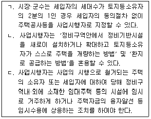
- ㄱ
- ㄱ, ㄴ
- ㄱ, ㄷ
- ㄴ, ㄷ
- ㄱ, ㄴ, ㄷ
(정답률: 25%)
64. 도시 및 주거환경정비법령상 조합의 정관으로 정할 수 없는 것은?
- 대의원 수
- 대의원 선임방법
- 대의원회 법정 의결정족수의 완화
- 청산금 분할징수 여부의 결정
- 조합 상근임원 보수에 관한 사항
(정답률: 26%)
65. 주택법령상 공동주택의 리모델링에 관한 설명으로 틀린 것은? (단, 조례는 고려하지 않음)
- 입주자·사용자 또는 관리주체가 리모델링하려고 하는 경우에는 공사기간, 공사방법 등이 적혀 있는 동의서에 입주자 전체의 동의를 받아야 한다.
- 리모델링에 동의한 소유자는 입주자대표회의가 시장·군수·구청장에게 허가신청서를 제출한 이후에도 서면으로 동의를 철회할 수 있다.
- 수직증축형 리모델링의 대상이 되는 기존 건축물의 층수가 15층 이상인 경우에는 3개층까지 증축할 수 있다.
- 주택단지 전체를 리모델링하고자 하는 경우에는 주택단지 전체의 구분소유자와 의결권의 각 3분의 2 이상의 결의 및 각 동의 구분소유자와 의결권의 각 과반수의 결의를 얻어야 한다.
- 증축형 리모델링은 하려는 자는 시장·군수·구청장에게 안전진단을 요청하여야 한다.
(정답률: 25%)
66. 주택법령상 지역주택조합의 조합원에 관한 설명으로 틀린 것은?
- 조합원의 사망으로 그 지위를 상속받는 자는 조합원이 될 수 있다.
- 조합원이 근무로 인하여 세대주 자격을 일시적으로 상실할 경우로서 시장·군수·구청장이 인정하는 경우에는 조합원 자격이 있는 것으로 본다.
- 조합설립 인가 후에 조합원의 탈퇴로 조합원 수가 주택건설 예정 세대수의 50% 미만이 되는 경우에는 결원이 발생한 범위에어 조합원을 신규로 가입하게 할 수 있다.
- 조합설립 인가 후에 조합원으로 추가모집되는 자가 조합원 자격 요건을 갖추었는지를 판단할 때에는 추가모집공고일을 기준으로 한다.
- 조합원 추가모집에 따른 주택조합의 변경인가 신청은 사업계획승인신청일까지 하여야 한다.
(정답률: 31%)
67. 주택법령상 용어에 관한 설명으로 옳은 것은?
- 폭 10m인 일반도로로 분리된 토지는 각각 별개의 주택단지이다.
- 공구란 하나의 주택단지에서 둘 이상으로 구분되는 일단의 구역으로서 공구별 세대수는 200세대 이상으로 해야한다.
- 세대구분형 공동주택이란 공동주택의 주택내부 공간의 일부를 세대별로 구분하여 생활이 가능한 구조로 하되 그 구분된 공간의 일부를 구분소유할 수 있는 주택이다.
- 500세대인 국민주택규모의 원룸형 주택은 도시형 생활주택에 해당한다.
- 「산업입지 및 개발에 관한 법률」 에 따른 산업단지개발사업에 의하여 개발·조성되는 공동주택이 건설되는 용지는 공공택지에 해당한다.
(정답률: 27%)
68. 주택법령상 주택조합에 관한 설명으로 틀린 것은? (단, 리모델링주택조합은 제외함)
- 지역주택조합설립인가를 받으려는 자는 해당 주택건설대지의 80% 이상에 해당하는 토지의 사용권원을 확보하여야 한다.
- 탈퇴한 조합원은 조합규약으로 정하는 바에 따라 부담한 비용의 환급을 청구할 수 있다.
- 주택조합은 주택건설 예정 세대수의 50% 이상의 조합원으로 구성하되, 조합원은 10명 이상이어야 한다.
- 지역주택조합은 그 구성원을 위하여 건설하는 주택을 그 조합원에게 우선 공급할 수 있다.
- 조합원의 공개모집 이후 조합원의 사망·자격상실·탈퇴 등으로 인한 결원이 충원하거나 미달된 조합원을 재모집하는 경우에는 신고하지 아니하고 선착순의 방법으로 조합원을 모집할 수 있다.
(정답률: 25%)
69. 주택법령상 투기과열지구의 지정 기준에 관한 조문의 일부이다. 다음 ( )에 들어갈 숫자를 옳게 연결한 것은?
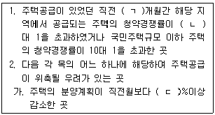
- ㄱ : 2, ㄴ : 5, ㄷ : 30
- ㄱ : 2, ㄴ : 10, ㄷ : 40
- ㄱ : 6, ㄴ : 5, ㄷ : 30
- ㄱ : 6, ㄴ : 10, ㄷ : 30
- ㄱ : 6, ㄴ : 10, ㄷ : 40
(정답률: 30%)
70. 주택법령상 주택건설사업계획의 승인 등에 관한 설명으로 틀린 것은? (단, 다른 법률에 따른 사업은 제외함)
- 주거전용 단독주택인 건축법령상의 한옥 50호 이상의 건설사업을 시행하려는 자는 사업계획승인을 받아야 한다.
- 주택건설사업을 시행하려는 자는 전체 세대수가 600세대 이상의 주택단지를 공구별로 분할하여 주택을 건설·공급할 수 있다.
- 사업주체는 공사의 착수기간이 연장되지 않는 한 주택건설사업계획의 승인을 받은 날부터 5년 이내에 공사를 시작하여야 한다.
- 사업계획승인권자는 사업계획승인의 신청을 받았을 때에는 정당한 사유가 없으면 신청받은 날부터 60일 이내에 사업주체에게 승인 여부를 통보하여야 한다.
- 사업계획승인의 조건으로 부과된 사항을 이행함에 따라 공사 착수가 지연되는 경우,사업계획승인권자는 그 사유가 없어진 날부터 3년의 범위에서 공사의 착수기간을 연장할 수 있다.
(정답률: 32%)
71. 주택법령상 주택의 공급에 관한 설명으로 틀린 것은?
- 군수는 입주자 모집승인시 사업주체에게서 받은 마감자재 목록표의 열람을 입주자가 요구하는 경우 이를 공개하여야 한다.
- 사업주체가 부득이한 사유로 인하여 사업계획승인의 마감자재와 다르게 시공·설치하려는 경우에는 당초의 마감자재와 같은 질 이하의 자재로 설치할 수 있다.
- 사업주체가 마감자재 목록표의 자재와 다른 마감자재를 시공·설치하려는 경우에는 그 사실을 입주예정자에게 알려야 한다.
- 사업주체가 일반인에게 공급하는 공동주택 중 공공택지에서 공급하는 주택의 경우에는 분양가상한제가 적용된다.
- 도시형 생활주택을 공급하는 경우에는 분양가상한제가 적용되지 않는다.
(정답률: 36%)
72. 건축법령상 건축허가를 받으려는 자가 해당 대지의 소유권을 확보하지 않아도 되는 경우만을 모두 고른 것은?
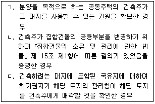
- ㄱ
- ㄴ
- ㄱ, ㄷ
- ㄴ, ㄷ
- ㄱ, ㄴ, ㄷ
(정답률: 16%)
73. 다음 건축물 중 「건축법」 의 적용을 받는 것은?
- 대지에 정착된 컨테이너를 이용한 주택
- 철도의 선로 부지에 있는 운전보안시설
- 「문화재보호법」 에 따른 가지정 문화재
- 고속도로 통행료 징수시설
- 「하천법」 에 따른 하천구역 내의 수문조작실
(정답률: 36%)
74. 건축법령상 건축등과 관련된 분쟁으로서 건축분쟁전문위원회의 조정 및 재정의 대상이 되지 않는 것은? (단, 「건설산업기본법」 제 69조에 따른 조정의 대상이 되는 분쟁은 제외함)
- ‘공사시공자’와 ‘해당 건축물의 건축으로 피해를 입은 인근주민’ 간의 분쟁
- ‘관계전문기술자’와 ‘해당 건축물의 건축으로 피해를 입은 인근주민’ 간의 분쟁
- ‘해당 건축물의 건축으로 피해를 입은 인근주민’ 간의 분쟁
- ‘건축허가권자’와 ‘건축허가신청자’ 간의 분쟁
- ‘건축주’와 ‘공사감리자’ 간의 분쟁
(정답률: 27%)
75. 건축법령상 용어에 관한 설명으로 틀린 것은?
- 내력벽을 수선하더라도 수선되는 벽면적의 합계까 30m2 미만인 경우는 “대수선”에 포함되지 않는다.
- 지하의 공작물에 설치하는 점포는 “건축물”에 해당하지 않는다.
- 구조 계산서와 시방서는 “설계도서”에 해당한다.
- ‘막다른 도로’의 구조와 너비는 ‘막다른 도로’가 “도로”에 해당하는지 여부를 판단하는 기준이 된다.
- “고층건축물”이란 층수가 30층 이상이거나 높이가 120m 이상인 건축물을 말한다.
(정답률: 27%)
76. 건축법령상 건축허가의 사전결정에 관한 설명으로 틀린 것은?
- 사전결정을 할 수 있는 자는 건축허가권자이다.
- 사전결정 신청사항에는 건축허가를 받기 위하여 신청자가 고려하여야 할 사항이 포함될 수 있다.
- 사전결정의 통지로써 「국토의 계획 및 이용에 관한 법률」 에 따른 개발행위허가가 의제되는 경우 허가권자는 사전결정을 하기에 앞서 관계 행정기관의 장과 협의하여야 한다.
- 사전결정신청자는 건축위원회 심의와 「도시교통정비 촉진법」 에 따른 교통영향평가서의 검토를 동시에 신청할 수 있다.
- 사전결정신청자는 사전결정을 통지받을 날부터 2년 이내에 착공신고를 하여야 하며, 이 기간에 착공신고를 하지 아니하면 사전결정의 효력이 상실된다.
(정답률: 28%)
77. 건축법령상 가설건축물 축조신고의 대상이 아닌 것은?
- 전시를 위한 견본주택
- 도시지역 중 주거지역에 설치하는 농업용 비닐하우스로서 연면적이 100m2 인 것
- 조립식 구조로 된 주거용으로 쓰는 가설건축물로서 연면적이 20m2 인 것
- 야외흡연실 용도로 쓰는 가설건축물로서 연면적이 50m2 인 것
- 2017년 10월 28일 현재 공장의 옥상에 축조하는 컨테이너로 된 가설건축물로서 임시사무실로 사용되는 것
(정답률: 21%)
78. 건축법령상 건축협정의 인가를 받은 건축협정구역에서 연접한 대지에 대하여 관계 법령의 규정을 개별 건축물마다 적용하지 아니하고 건축협정구역을 대상으로 통합하여 적용할 수 있는 것만을 모두 고른 것은?
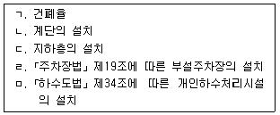
- ㄱ, ㄴ, ㄹ
- ㄱ, ㄴ, ㄷ, ㅁ
- ㄱ, ㄷ, ㄹ, ㅁ
- ㄴ, ㄷ, ㄹ, ㅁ
- ㄱ, ㄴ, ㄷ, ㄹ, ㅁ
(정답률: 25%)
79. 농지법령상 조문의 일부이다. 다음 ( )안에 들어갈 숫자를 옳게 연결한 것은?
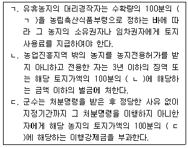
- ㄱ : 10, ㄴ : 20, ㄷ : 50
- ㄱ : 10, ㄴ : 50, ㄷ : 20
- ㄱ : 20, ㄴ : 10, ㄷ : 50
- ㄱ : 20, ㄴ : 50, ㄷ : 10
- ㄱ : 50, ㄴ : 10, ㄷ : 20
(정답률: 28%)
80. 농지법령상 농업에 종사하는 개인으로서 농업인에 해당하는 자는?
- 꿀벌 10군을 사육하는 자
- 가금 500수를 사육하는 자
- 1년 중 100일을 축산업에 종사하는 자
- 농산물에 연간 판매액이 100만원인 자
- 농지에 300m2의 비닐하우스를 설치하여 다년생식물을 재배하는 자
(정답률: 33%)
3과목: 임의구분
81. 공간정보의 구축 및 관리 등에 관한 법령에서 규정하고 있는 지목의 종류를 모두 고른 것은?
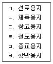
- ㄱ, ㄴ, ㄷ
- ㄴ, ㅁ, ㅂ
- ㄱ, ㄷ, ㄹ, ㅂ
- ㄱ, ㄹ, ㅁ, ㅂ
- ㄴ, ㄷ, ㄹ, ㅁ
(정답률: 44%)
82. 공간정보의 구축 및 관리 등에 관한 법령상 다음의 예시에 따를 경우 지적측량의 측량기간과 측량검사기간으로 옳은 것은? (순서대로 측량기간, 측량검사기간)
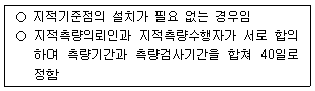
- 33일, 7일
- 30일, 10일
- 26일, 14일
- 25일, 15일
- 20일, 20일
(정답률: 43%)
83. 공간정보의 구축 및 관리 등에 관한 법령상 토지의 등록 등에 관한 설명으로 옳은 것은?
- 지적공부에 등록하는 지번·지목·면적·경계 또는 좌표는 토지의 이동이 있을 때 토지소유자의 신청을 받아 지적소관청이 결정하되, 신청이 없으면 지적소관청이 직권으로 조사·측량하여 결정할 수 있다.
- 지적소관청은 토지의 이용현황을 직권으로 조사·측량하여 토지의 지번·지목·면적·경계 또는 좌표를 결정하려는 때에는 토지이용계획을 수립하여야 한다.
- 토지소유자가 지번을 변경하려면 지번변경 사유와 지번변경 대상토지의 지번·지목·면적에 대한 상세한 내용을 기재하여 지적소관청에 신청하여야 한다.
- 지적소관청은 토지가 일시적 또는 임시적인 용도로 사용되는 경우로서 토지소유자의 신청이 있는 경우에는 지목을 변경할 수 있다.
- 지적도의 축척이 600분의 1인 지역과 경계점좌표등록부에 등록하는 지역의 1필지 면적이 1제곱미터 미만일 때에는 1제곱미터로 한다.
(정답률: 45%)
84. 공간정보의 구축 및 관리 등에 관한 법령상 지상경계점등록부의 등록사항으로 옳은 것은?
- 경계점표지의 설치 사유
- 경계점의 사진 파일
- 경계점표지의 보존 기간
- 경계점의 설치 비용
- 경계점표지의 제조 연월일
(정답률: 41%)
85. 공간정보의 구축 및 관리 등에 관한 법령상 축척변경에 관한 설명이다. ( )안에 들어갈 내용으로 옳은 것은? (순서대로 ㄱ, ㄴ, ㄷ)
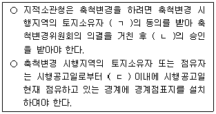
- 2분의 1이상, 국토교통부장관, 30일
- 2분의 1이상, 시·도지사 또는 대도시 시장, 60일
- 2분의 1이상, 국토교통부장관, 60일
- 3분의 2이상, 시·도지사 또는 대도시 시장, 30일
- 3분의 2이상, 국토교통부장관, 60일
(정답률: 38%)
86. 공간정보의 구축 및 관리 등에 관한 법령상 토지소유자 등 이해관계인이 지적측량수행자에게 지적측량을 의뢰할 수 없는 경우는?
- 바다가 된 토지의 등록을 말소하는 경우로서 지적측량을 할 필요가 있는 경우
- 토지를 등록전화하는 경우로서 지적측량을 할 필요가 있는 경우
- 지적공부의 등록사항을 정정하는 경우로서 지적측량을 할 필요가 있는 경우
- 도시개발사업 등의 시행지역에서 토지의 이동이 있는 경우로서 지적측량을 할 필요가 있는 경우
- 「지적재조사에 관한 특별법」 에 따른 지적재조사사업에 따라 토지의 이동이 있는 경우로서 지적측량을 할 필요가 있는 경우
(정답률: 35%)
87. 공간정보의 구축 및 관리 등에 관한 법령상 지목의 구분에 관한 설명으로 옳은 것은?
- 물을 정수하여 공급하기 위한 취수·저수·도수(導水)·정수·송수 및 배수 시설의 부지 및 이에 접속된 부속시설물의 부지 지목은 “수도용지”로 한다.
- 「산업집적활성화 및 공장설립에 관한 법률」 등 관계 법령에 따른 공장부지 조성공사가 준공된 토지의 지목은 “산업용지”로 한다.
- 물이 고이거나 상시적으로 물을 저장하고 있는 댐·저수지·소류지(沼溜地) 등의 토지와 연·왕골 등을 재배하는 토지의 지목은 “유지”로 한다.
- 물을 상시적으로 이용하지 않고 곡물·원예작물(과수류 포함) 등의 식물을 주로 재배하는 토지와 죽림지의 지목은 “전”으로 한다.
- 학교용지·공원 등 다른 지목으로 된 토지에 있는 유적·고적·기념물 등을 보호하기 위하여 구획된 토지의 지목은 “사적지”로 한다.
(정답률: 37%)
88. 공간정보의 구축 및 관리 등에 관한 법령상 지적확정측량을 실시한 지역의 각 필지에 지번을 새로 부여하는 방법을 준용하는 것을 모두 고른 것은?
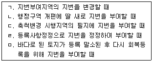
- ㄱ
- ㄱ, ㄴ
- ㄱ, ㄴ, ㄷ
- ㄱ,ㄴ, ㄷ, ㄹ
- ㄴ, ㄷ, ㄹ, ㅁ
(정답률: 34%)
89. 공간정보의 구축 및 관리 등에 관한 법령상 경계점 좌표등록부를 갖춰 두는 지역의 지적공부 및 토지의 등록 등에 관한 설명으로 틀린 것은?
- 지적도에는 해당 도면의 제명 앞에 “(수치)”라고 표시하여야 한다.
- 지적도에는 도곽선의 오른쪽 아래 끝에 “ 이 도면에 의하여 측량을 할 수 없음”이라고 적어야 한다.
- 토지 면적은 제곱미터 이하 한 자리 단위로 결정하여야 한다.
- 면적측정 방법은 좌표면적계산법에 의한다.
- 경계점좌표등록보를 갖춰 두는 토지는 지적확정측량 또는 축척변경을 위한 측량을 실시하여 경계점을 좌표로 등록한 지역의 토지로 한다.
(정답률: 38%)
90. 공간정보의 구축 및 관리 등에 관한 법령상 지적소관청은 토지의 이동 등으로 토지의 표시 변경에 관한 등기를 할 필요가 있는 경우에는 지체없이 관할 등기관서에 그 등기를 촉탁하여야 한다. 등기촉탁 대상이 아닌 것은?
- 지번부여지역의 전부 또는 일부에 대하여 지번을 새로 부여한 경우
- 바다로 된 토지의 등록을 말소한 경우
- 하나의 지번부여지역에 서로 다른 축척의 지적도가 있어 축척을 변경한 경우
- 지적소관청이 신규등록하는 토지의 소유자를 직접 조사하여 등록한 경우
- 지적소관청이 직권으로 조사·측량하여 지적공부의 등록사항을 정정한 경우
(정답률: 36%)
91. 공간정보의 구축 및 관리 등에 관한 법령상 지적공부(정보처리시스템을 통하여 기록·저장한 경우는 제외)의 복구에 관한 설명으로 틀린 것은?
- 지적소관청은 지적공부의 전부 또는 일부가 멸실되거나 훼손된 경우에는 지체없이 이를 복구하여야 한다.
- 지적공부를 복구할 때 소유자에 관한 사항은 부동산 등기부나 법원의 확정판결에 따라 복구하여야 한다.
- 토지이동정리 결의서는 지적공부의 복구에 관한 관계자료에 해당한다.
- 복구자료도에 따라 측정한 면적과 지적복구자료 조사서의 조사된 면적의 증감이 허용범위를 초과하는 경우에는 복구측량을 하여야 한다.
- 지적소관청이 지적공부를 복구하려는 경우에는 해당 토지의 소유자에게 지적공부의 복구신청을 하도록 통지하여야 한다.
(정답률: 36%)
92. 공간정보의 구축 및 관리 등에 관한 법령상 지적소관청이 토지소유자에게 지적정리 등을 통지하여야 하는 경우로 틀린 것은? (단, 통지받을 자의 주소나 거소를 알 수 없는 경우는 제외)
- 도시개발사업 시행지역에 있는 토지로서 그 사업 시행에서 제외된 토지의 축척을 지적소관청이 변경하여 등록한 경우
- 지적공부의 등록사항에 잘못이 있음을 발견하여 지적소관청이 직권으로 조사·측량하여 정정 등록한 경우
- 토지소유자가 하여야 하는 토지이동 신청을 「민법」제404조에 따른 채권자가 대위하여 지적소관청이 등록한 경우
- 토지소유자의 토지이동신청이 없어 지적소관청이 직권으로 조사·측량하여 지적공부에 등록하는 지번·지목·면적·경계 또는 좌표를 결정하여 등록한 경우
- 지번부여지역의 일부가 행정구역의 개편으로 다른 지번부여지역에 속하게 되어 지적소관청이 새로 속하게 된 지번부여지역의 지번을 부여하여 등록한 경우
(정답률: 20%)
93. 부기등기할 사항이 아닌 것은?
- 저당권 이전등기
- 전전세권 설정등기
- 부동산의 표시변경등기
- 지상권을 목적으로 하는 저당권설정등기
- 소유권 외의 권리에 대한 처분제한의 등기
(정답률: 34%)
94. 등기당사자능력에 관한 설명으로 옳은 것은? (다툼이 있으면 판례에 따름)
- 태아로 있는 동안에는 태아의 명의로 대리인이 등기를 신청한다.
- 민법상 조합은 직접 자신의 명의로 등기를 신청한다.
- 지방자치단체와 같은 공법인은 직접 자신의 명의로 등기를 신청할 수 없다.
- 사립학교는 설립주체가 누구인지를 불문하고 학교 명의로 등기를 신청한다.
- 법인 아닌 사단은 그 사단의 명의로 대표자나 관리인이 등기를 신청한다.
(정답률: 37%)
95. 저당권의 등기절차에 관한 설명으로 틀린 것은?
- 일정한 금액을 목적으로 하지 않는 채권을 담보하기 위한 저당권설정등기를 신청하는 경우, 그 채권의 평가액을 신청정보의 내용으로 등기소에 제공하여야 한다.
- 저당권의 이전등기를 신청하는 경우, 저당권이 채권과 같이 이전한다는 뜻을 신청정보의 내용으로 등기소에 제공하여야 한다.
- 채무자와 저당권설정자가 동일한 경우에도 등기기록에 채무자를 표시하여야 한다.
- 3개의 부동산이 공동담보의 목적물로 제공되는 경우, 등기관은 공동담보목록을 작성하여야 한다.
- 피담보채권의 일부양도를 이유로 저당권의 일부이전등기를 하는 경우, 등기관은 그 양도액도 기록하여야 한다.
(정답률: 38%)
96. 말소등기에 관한 설명으로 틀린 것은?
- 말소되는 등기의 종류에는 제한이 없으며, 말소등기의 말소등기도 허용된다.
- 말소등기는 기존의 등기가 원시적 또는 후발적인 원인에 의하여 등기사항 전부가 부적법할 것을 요건으로 한다.
- 농지를 목적으로 하는 전세권설정등기가 실행된 경우, 등기관은 이를 직권으로 말소할 수 있다.
- 피담보채무의 소멸을 이유로 근저당권설정등기가 말소되는 경우, 채무자를 추가한 근저당권 변경의 부기등기는 직권으로 말소된다.
- 말소등기신청의 경우에 ‘등기상 이해관계 있는 제3자’란 등기의 말소로 인하여 손해를 입을 우려가 있다는 것이 등기기록에 의하여 형식적으로 인정되는 자를 말한다.
(정답률: 36%)
97. 등기권리자 또는 등기명의인이 단독으로 신청하는 등기에 관한 설명으로 틀린 것을 모두 고른 것은?
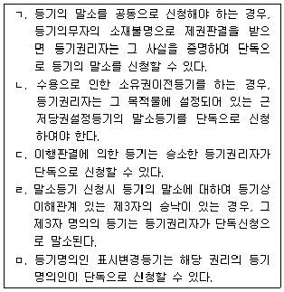
- ㄱ, ㄷ
- ㄱ, ㄹ
- ㄴ, ㄹ
- ㄴ, ㅁ
- ㄷ, ㅁ
(정답률: 26%)
98. 甲은 乙에게 금전을 대여하면서 그 담보로 乙소유의 A부동산, B부동산에 甲명의로 공동저당권설정등기(채권액 1억 원)을 하였다. 그 후 丙이 A부동산에 대하여 저당권설정등기(채권액 5천만 원)를 하였다. 乙의 채무불이행으로 甲이 A부동산에 대한 담보권을 실행하여 甲의 채권은 완제되었으나 丙의 채권은 완제되지 않았다. 丙이 甲을 대위하고자 등기하는 경우 B부동산에 대한 등기기록 사항이 아닌 것은?
- 채권액
- 존속기간
- 매각대금
- 매각 부동산
- 선순위 저당권자가 변제받은 금액
(정답률: 33%)
99. 공유관계의 등기에 관한 설명으로 틀린 것은?
- 구분소유적 공유관계에 있는 1필의 토지를 특정된 부분대로 단독소유하기 위해서는 분필등기한 후 공유자 상호간에 명의신탁해지를 원인으로 하는 지분소유권이전 등기를 신청한다.
- 토지에 대한 공유물분할약정으로 인한 소유권이전등기는 공유자가 공동으로 신청할 수 있다.
- 등기된 공유물분할금기간을 단축하는 약정에 관한 변경등기는 공유자 전원이 공동으로 신청하여야 한다.
- 공유자 중 1인의 지분포기로 인한 소유권이전등기는 공유지분권을 포기하는 공유자가 단독으로 신청하여야 한다.
- 등기된 공유물분할금지기간약정을 갱신하는 경우, 이에 대한 변경등기는 공유자 전원이 공동으로 신청하여야 한다.
(정답률: 38%)
100. ‘지체 없이’ 신청해야 하는 등기를 모두 고른 것은?
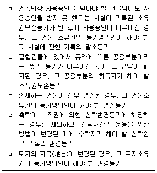
- ㄱ, ㄷ
- ㄱ, ㄹ
- ㄴ, ㄹ
- ㄴ, ㅁ
- ㄷ, ㅁ
(정답률: 32%)
101. 용익권의 등기에 관한 설명으로 틀린 것은?
- 지상권설정등기를 할 때에는 지상권설정의 목적을 기록하여야 한다.
- 지역권설정등기를 할 때에는 지역권설정의 목적을 기록하여야 한다.
- 임차권설정등기를 할 때에 등기원인에 임차보증금이 있는 경우, 그 임차보증금은 등기사항이다.
- 지상권설정등기를 신청할 때에 그 범위가 토지의 일부인 경우, 그 부분을 표시한 토지대장을 첨부정보로서 등기소에 제공하여야 한다.
- 임차권설정등기를 신청할 때에는 차임을 신청정보의 내용으로 제공하여야 한다.
(정답률: 20%)
102. 가등기에 관한 설명으로 틀린 것은? (다툼이 있으면 판례에 따름)
- 물권적 청구권을 보전하기 위한 가등기는 허용되지 않는다.
- 가등기의무자가 가등기명의인의 승낙을 얻어 단독으로 가등기의 말소를 신청하는 경우에는 그 승낙이 있음을 증명하는 정보를 등기소에 제공해야 한다.
- 가등기에 의하여 순위 보전의 대상이 되어 있는 물권변동청구권이 양도된 경우, 그 가등기상의 권리에 대한 이전등기를 할 수 있다.
- 가등기에 의한 본등기를 한 경우, 본등기의 순위는 가등기의 순위에 따른다.
- 지상권설정등기청구권보전 가등기에 의하여 본등기를 한 경우, 가등기 후 본등기 전에 마쳐진 당해 토지에 대한 저당권설정등기는 직권말소대상이 된다.
(정답률: 35%)
103. 관공서가 촉탁하는 등기에 관한 설명으로 옳은 것은?
- 관공서가 촉탁정보 및 첨부정보를 적은 서면을 제출하는 방법으로 등기촉탁하는 경우에는 우편으로 그 촉탁서를 제출할 수 있다.
- 공동신청을 해야 할 경우, 등기권리자가 지방자치단체인 때에는 등기의무자가 승낙이 없더라도 해당 등기를 등기소에 촉탁해야 한다.
- 관공서가 공매처분을 한 경우에 등기권리자의 청구를 받으면 지체 없이 체납처분으로 인한 압류등기를 등기소에 촉탁해야 한다.
- 관공서가 체납처분으로 인한 압류등기를 촉탁하는 경우에는 등기명의인을 갈음하여 등기명의인의 표시변경등기를 함께 촉탁할 수 없다.
- 수용으로 인한 소유권이전등기를 신청하는 경우에는 보상이나 공탁을 증명하는 정보를 첨부정보로서 등기소에 제공할 필요가 없다.
(정답률: 32%)
104. 부동산등기법령상 등기관의 처분에 대한 이의절차에 관한 설명으로 틀린 것은?
- 이의에는 집행정지의 효력이 없다.
- 새로운 사실이나 새로운 증거방법을 근거로 이의신청을 할 수 있다.
- 관할 지방법원은 이의신청에 대하여 결정하기 전에 등기관에게 이의가 있다는 뜻의 부기등기를 명령할 수 있다.
- 이의신청서에는 이의신청인의 성명과 주소, 이의신청의 대상인 등기관의 결정 또는 처분, 이의신청의 취지와 이유, 그 밖에 대법원예규로 정하는 사항을 적고 신청인이 기명날인 또는 서명하여야 한다.
- 이의에 대한 결정의 통지는 결정서 등본에 의하여 한다.
(정답률: 38%)
1⑤. 지방세법상 재산세의 물납에 관한 설명으로 틀린 것은?
- 「지방세법」 상 물납의 신청 및 허가 요건을 충족하고 재산세(재산세 도시지역분 포함)의 납부세액이 1천만원 초과하는 경우 물납이 가능하다.
- 서울특별시 강남구와 경기도 성남시에 부동산을 소유하고 있는 자의 성남시 소재 부동산에 대하여 부과된 재산세의 물납은 성남시 내에 소재하는 부동산만 가능하다.
- 물납허가를 받은 부동산을 행정안전부령으로 정하는 바에 따라 물납하였을 때에는 납부기한 내에 납부한 것으로 본다.
- 물납하려는 자는 행정안전부령으로 정하는 서류를 갖추어 그 납부기한 10일 전까지 납세지를 관할하는 시장·군수·구청장에게 신청하여야 한다.
- 물납 신청 후 불허가 통지를 받은 경우에 해당 시·군·구의 다른 부동산으로의 변경신청은 허용되지 않으며 금전으로만 납부하여야 한다.
(정답률: 37%)
106. 지방세법상 재산세의 과세기준일 현재 납세의무자에 관한 설명으로 틀린 것은?
- 공유재산인 경우 그 지분에 해당하는 부분(지분의 표시가 없는 경우에는 지분이 균등한 것으로 봄)에 대해서는 그 지분권자를 납세의무자로 본다.
- 소유권의 귀속이 분명하지 아니하여 사실상의 소유자를 확인할 수 없는 경우에는 그 사용자가 납부할 의무가 있다.
- 지방자치단체와 재산세 과세대상 재산을 연부로 매매계약을 체결하고 그 재산의 사용권을 무상으로 받은 경우에은 그 매수계약자를 납세의무자로 본다.
- 공부상에 개인 등의 명의로 등재되어 있는 사실상의 종중재산으로서 종중소유임을 신고하지 아니하였을 때에는 공부상 소유자를 납세의무자로 본다.
- 상속이 개시된 재산으로서 상속등기가 이행되지 아니하고 사실상의 소유자를 신고하지 아니하였을 때에는 공동상속인 각자가 받았거나 받을 재산에 따라 납부할 의무를 진다.
(정답률: 38%)
107. 종합부동산세에 관한 설명으로 틀린 것은?
- 종합부동산세는 부과·징수가 원칙이며 납세의무자의 선택에 의하여 신고납부도 가능하다.
- 관할세무서장이 종합부동산세를 징수하고자 하는 때에는 납세고지서에 주택 및 토지로 구분한 과세표준과 세액을 기재하여 납부기간 개시 5일 전까지 발부하여야 한다.
- 주택에 대한 세부담 상한의 기준이 되는 직전 연도에 해당 주택에 부과된 주택에 대한 총세액상당액은 납세의무자가 해당 연도의 과세표준합산주택을 직전 연도 과세기준일에 실제로 소유하였는지의 여부를 불문하고 직전 연도 과세기준일 현재 소유한 것으로 보아 계산한다.
- 주택분 종합부동산세액에서 공제되는 재산세액은 재산세 표준세율의 100분의 50의 범위에서 가감된 세율이 적용된 경우에는 그 세율이 적용되기 전의 세액으로 하고, 재산세 세부담 상한을 적용받은 경우에는 그 상한을 적용받기 전의 세액으로 한다.
- 과세기준일 현재 토지분 재산세의 납세의무자로서 국내에 소재하는 별도합산과세대상 토지의 공시가격을 합한 금액이 80억원을 초과하는 자는 토지에 대한 종합부동산세의 납세의무자이다.
(정답률: 31%)
108. 지방세법상 재산세의 비과세 대상이 아닌 것은? (단, 아래의 답항별로 주어진 자료 외의 비과세요건은 충족된 것으로 가정함)
- 임시로 사용하기 위하여 건축된 건축물로서 재산세 과세기준일 현재 1년 미만의 것
- 재산세를 부과하는 해당 연도에 철거하기로 계획이 확정되어 재산세 과세기준일 현재 행정관청으로부터 철거명령을 받은 주택과 그 부속토지인 대지
- 농업용 구거와 자연유수의 배수처리에 제공하는 구거
- 「군사기지 및 군사시설 보호법」 에 따른 군사기지 및 군사시설 보호구역 중 통제보호구역에 있는 토지(전·답·과수원 및 대지는 제외)
- 「도로법」 에 따른 도로와 그밖에 일반인의 자유로운 통행을 위하여 제공할 목적으로 개설한 사설도로(「건축법 시행령」 제 80조의 2에 따른 대지 안의 공지는 제외)
(정답률: 32%)
109. 소득세법상 거주자의 양도소득세 과세대상에 관한 설명으로 틀린 것은? (단, 양도자산은 국내자산임)
- 무상이전에 따라 자산의 소유권이 변경된 경우에는 과세대상이 되지 아니한다.
- 부동산에 관한 권리 중 지상권의 양도는 과세대상이다.
- 사업용 건물과 함께 양도하는 영업권은 과세대상이다.
- 법인의 주식을 소유하는 것만으로 시설물을 배타적으로 이용하게 되는 경우 그 주식의 양도는 과세대상이다.
- 등기되지 않은 부동산임차권의 양도는 과세대상이다.
(정답률: 35%)
110. 다음은 거주자가 국내소재 1세대 1주택을 양도한 내용이다. 양도차익은 얼마인가?
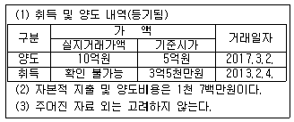
- 27,900,000원
- 28,300,000원
- 28,950,000원
- 283,000,000원
- 289,500,000원
(정답률: 22%)
111. 소득세법상 양도에 해당하는 것은? (단, 거주자의 국내자산으로 가정함)
- 「도시개발법」 이나 그 밖의 법률에 따른 환지처분으로 지목이 변경되는 경우
- 부담부증여 시 그 증여가액 중 체무액에 해당하는 부분을 제외한 부분
- 「소득세법 시행령」 제 151조 제1항에 따른 양도담보계약을 체결한 후 채무불이행으로 인하여 당해 자산을 변제에 충당한 때
- 매매원인 무효의 소에 의하여 그 매매사실이 원인무효로 판시되어 소유권이 환원되는 경우
- 본인 소유 자산을 경매로 인하여 본인이 재취득한 경우
(정답률: 34%)
112. 소득세법상 거주자의 양도소득세에 관한 설명으로 틀린 것은? (단, 국내소재 부동산의 양도임)
- 같은 해에 여러 개의 자산(모두 등기됨)을 양도한 경우 양도소득기본공제는 해당 과세기간에 먼저 양도한 자산의 양도소득금액에서부터 순서대로 공제한다. 단, 감면 소득금액은 없다.
- 「소득세법」 제104조 제3항에 따른 미등기 양도자산에 대하여는 장기보유특별공제를 적용하지 아니한다.
- 「소득세법」 제97조의 2 제1항에 따라 이월과세를 적용받는 경우 장기보유특별공제의 보유기간은 증여자가 해당 자산을 취득한 날부터 기산한다.
- A법인과 특수관계에 있는 주주가 시가 3억원(「법인세법」 제52조에 따른 시가임)의 토지를 A법인에게 5억원에 양도한 경우 양도가액은 3억원으로 본다. 단, A법인은 이 거래에 대하여 세법에 따른 처리를 적절하게 하였다.
- 특수관계인 간의 거래가 아닌 경우로서 취득가액인 실지거래가액을 인정 또는 확인할 수 없어 그 가액을 추계결정 또는 경정하는 경우에는 매매사례가액, 감정가액, 기준시가의 순서에 따라 적용한 가액에 의한다.
(정답률: 31%)
113. 소득세법상 거주자가 국내소재 부동산 등을 임대하여 발생하는 소득에 관한 설명으로 틀린 것은?
- 지상권의 대여로 인한 소득은 부동산임대업에서 발생한 소득에서 제외한다.
- 부동산임대업에서 발생한 소득은 사업소득에 해당한다.
- 주거용 건물 임대업에서 발생한 결손금은 종합소득 과세표준을 계산할 때 공제한다.
- 부부가 각각 주택을 1채씩 보유한 상태에서 그 중 1주택을 임대하고 연간 1,800만원의 임대료를 받았을 경우 주택임대에 따른 과세소득은 없다.
- 임대보증금의 간주임대료를 계산하는 과정에서 금융수익을 차감할 때 그 금융수익은 수입이자와 할인료, 수입배당금, 유가증권처분이익으로 한다.
(정답률: 22%)
114. 소득세법상 거주자가 국내자산을 양도한 경우 양도소득의 필요경비에 관한 설명으로 옳은 것은?
- 취득가액을 실지거래가액에 의하는 경우 당초 약정에 의한 지급기일의 지연으로 인하여 추가로 발생하는 이자상당액은 취득원가에 포함하지 아니한다.
- 취득가액을 실지거래가액에 의하는 경우 자본적지출액도 실지로 지출된 가액에 의하므로 「소득세법」 제160조의 2 제2항에 따른 증명서류를 수취·보관하지 않더라도 지출사실이 입증되면 이를 필요경비로 인정한다.
- 「소득세법」 제 97조 제3항에 따른 취득가액을 계산할 때 감가상각비를 공제하는 것은 취득가액을 실지거래가액으로 하는 경우에만 적용하므로 취득가액을 환산가액으로 하는 때에는 적용하지 아니한다.
- 토지를 취득함에 있어서 부수적으로 매입한 채권을 만기 전에 양도함으로써 발생하는 매각차손은 채권의 매매상대방과 관계없이 전액 양도비용으로 인정된다.
- 취득세는 납부영수증이 없으면 필요경비로 인정되지 아니한다.
(정답률: 24%)
115. 지방세법상 부동산등기에 대한 등록면허세의 표준세율로 틀린 것은? (단, 표준세율을 적용하여 산출한 세액이 부동산등기에 대한 그 밖의 등기 또는 등록세율보다 크다고 가정함)
- 전세권 설정등기: 전세금액의 1천분의 2
- 상속으로 인한 소유권 이전등기: 부동산가액의 1천분의 8
- 지역권 설정 및 이전등기: 요역지 가액의 1천분의 2
- 임차권 설정 및 이전등기: 임차보증금의 1천분의 2
- 저당권 설정 및 이전등기: 채권금액의 1천분의 2
(정답률: 35%)
116. 지방세법상 취득의 시기 등에 관한 설명으로 틀린 것은?
- 연부로 취득하는 것(취득가액의 총액이 50만원 이하인 것은 제외)은 그 사실상의 연부금 지급일을 취득일로 본다. 단, 취득일 전에 등기 또는 등록한 경우에는 그 등기일 또는 등록일에 취득한 것으로 본다.
- 관계법령에 따라 매립·간척 등으로 토지를 원시취득하는 경우로서 공사준공인가일 전에 사실상 사용하는 경우에는 그 사실상 사용일을 취득일로 본다.
- 「주택법」 제11조에 따른 주택조합이 주택건설사업을 하면서 조합원으로부터 최득하는 토지 중 조합원에게 귀속되지 아니하는 토지를 취득하는 경우에는 「주택법」 제49조에 따른 사용검사를 받은 날에 그 토지를 취득한 것으로 본다.
- 「도시 및 주거환경정비법」 제16조 제2항에 따른 주택재건축조합이 주택재건축사업을 하면서 조합원으로부터 취득하는 토지 중 조합원에게 귀속되지 아니하는 토지를 취득하는 경우에는 「도시 및 주거환경정비법」 제54조 제2항에 따른 소유권이전 고시일에 그 토지를 취득한 것으로 본다.
- 토지의 지목변경에 따른 취득은 토지의 지목이 사실상 변경된 날과 공부상 변경된 날 중 빠른 날을 취득일로 본다. 다만, 토지의 지목변경일 이전에 사용하는 부분에 대해서는 그 사실상의 사용일을 취득일로 본다.
(정답률: 32%)
117. 지방세기본법상 지방자치단체의 징수금일 납부할 의무가 소멸되는 것은 모두 몇 개 인가?
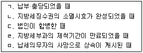
- 1개
- 2개
- 3개
- 4개
- 5개
(정답률: 42%)
118. 지방세법상 등록면허세에 관한 설명으로 틀린 것은?
- 같은 등록에 관계되는 재산이 둘 이상의 지방자치단체에 걸쳐 있어 등록면허세를 지방자치단체별로 부과할 수 없을 때에는 등록관청 소재지를 납세지로 한다.
- 「여신전문금융업법」 제2조 제12호에 따른 할부금융업을 영위하기 위하여 대도시에서 법인을 설립함에 따른 등기를 할 때에는 그 세율을 해당 표준세율의 100분의 300으로 한다. 단, 그 등기일로부터 2년 이내에 업종변경이나 업종추가는 없다.
- 무덤과 이에 접속된 부속시설물의 부지로 사용되는 토지로서 지적공부상 지목이 묘지인 토지에 관한 등기에 대하여는 등록면허세를 부과하지 아니한다.
- 재산권 기타 권리의 설정·변경 또는 소멸에 관한 사항을 공부에 등기 또는 등록을 받는 등기·등록부상에 기재된 명의자는 등록면허세를 납부할 의무를 진다.
- 지방자치단체의 장은 조례로 정하는 바에 따라 등록면허세의 세율을 부동산 등기에 대한 표준세율의 100분의 50의 범위에서 가감할 수 있다.
(정답률: 34%)
119. 지방세법상 취득세에 관한 설명으로 틀린 것은?
- 지방자치단체에 기부채납을 조건으로 부동산을 취득하는 경우라도 그 반대급부로 기부채납 대상물의 무상사용권을 제공받는 때에는 그 해당 부분에 대해서는 취득세를 부과한다.
- 상속(피상속인이 상속인에게 한 유증 및 포괄유증과 신탁재산의 상속 포함)으로 인하여 취득하는 경우에는 상속인 각자가 상속받는 취득물건(지분을 취득하는 경우에는 그 지분에 해당하는 취득물건을 말함)을 취득한 것으로 본다.
- 국가로부터 유상취득하는 경우에는 신고 또는 신고가액의 표시가 없거나 그 신고가액이 시가표준액보다 적을 때에도 사실상의 취득가격 또는 연부금액을 과세표준으로 한다.
- 무상승계취득한 취득물건을 취득일에 등기·등록한 후 화해조서·인낙조서에 의하여 취득일로부터 60일 이내에 계약이 해제된 사실을 입증하는 경우에는 취득한 것으로 보지 아니한다.
- 「주택법」 제2조 제3호에 따른 공동주택의 개수(「건축법」 제2조 제1항 제9호에 따른 대수선은 제외함)로 인한 취득 중 개수로 인한 취득 당시 「지방세법」 제4조에 따른 주택의 시가표준액이 9억원 이하인 주택과 관련된 개수로 인한 취득에 대해서는 취득세를 부과하지 아니한다.
(정답률: 28%)
120. 지방세법상 취득세 표준세율에서 증과기준세율을 뺀 세율로 산출한 금액을 그 세액으로 하는 것으로만 모두 묶은 것은? (단, 취득물건은 「지방세법」 제11조 제1항 제8호에 따른 주택 외의 부동산이며 취득세 증과대상이 아님)
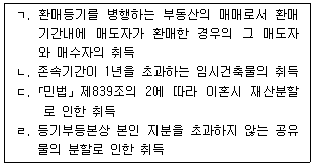
- ㄱ, ㄴ
- ㄴ, ㄹ
- ㄷ, ㄹ
- ㄱ, ㄴ, ㄷ
- ㄱ, ㄷ, ㄹ
(정답률: 29%)